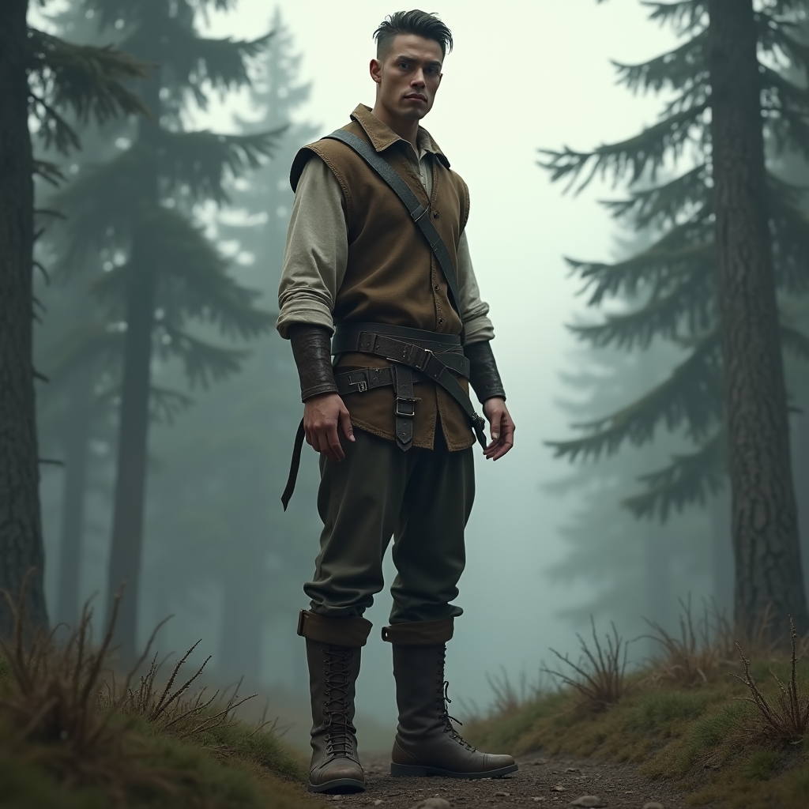
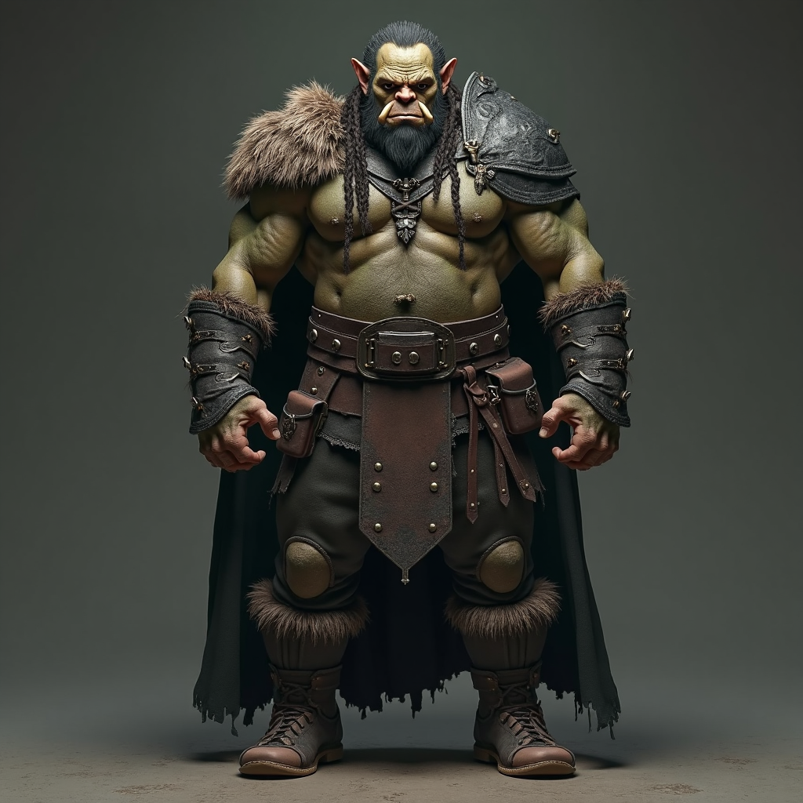
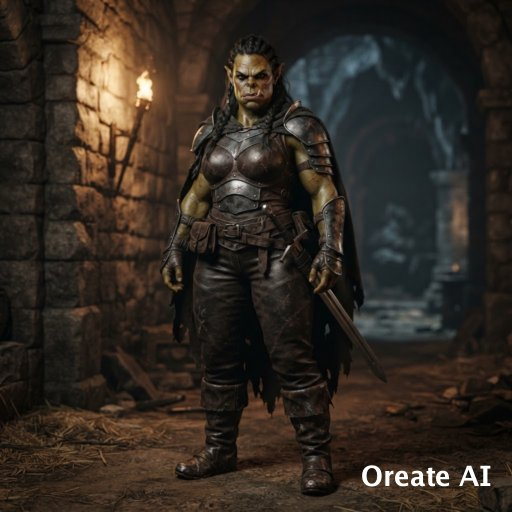
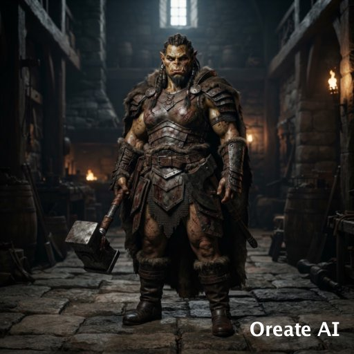
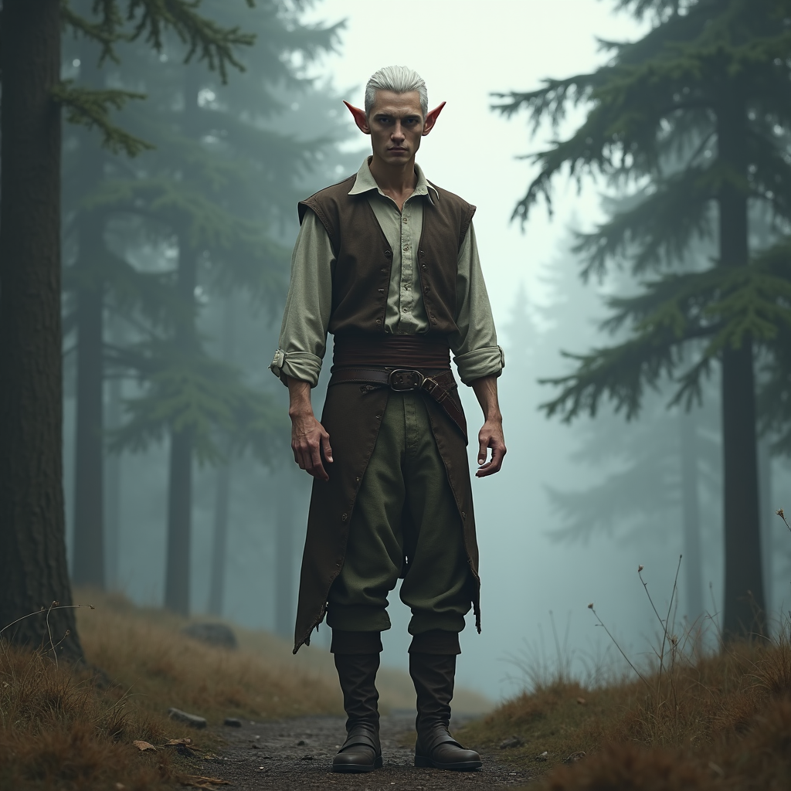
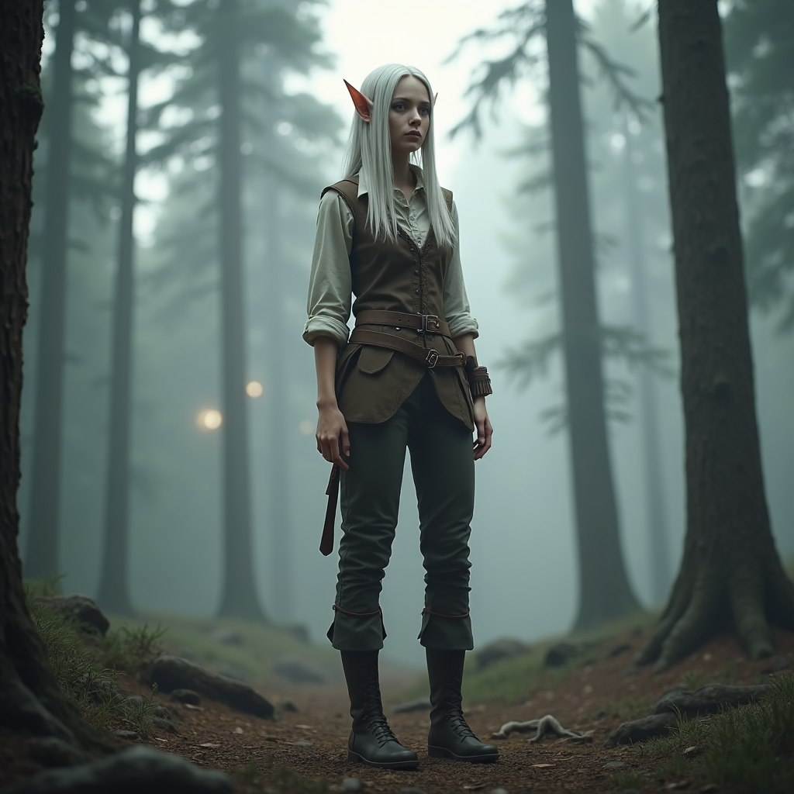
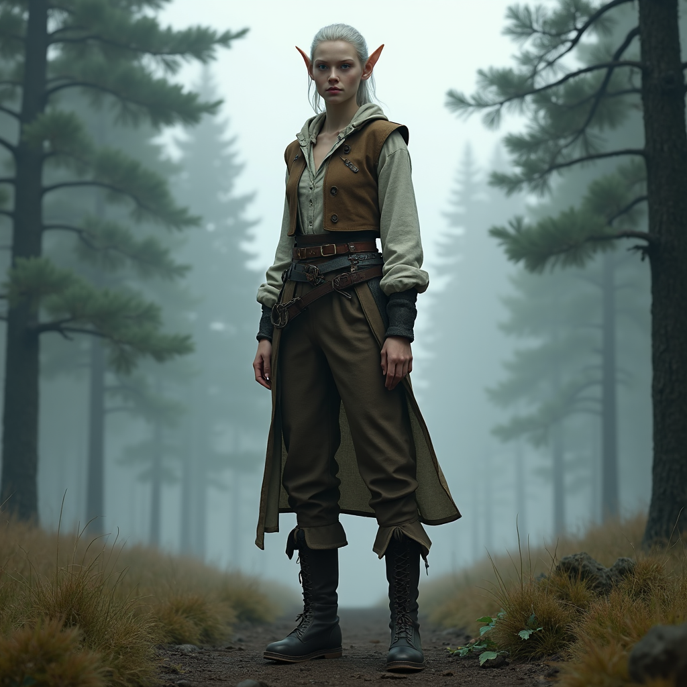

Тест генерації
Раси: по три варіанти на кожну стать кожної раси — вибери, які йдуть на сторінку Раси та професії. Нічого звідси не лінкується з основних сторінок.
FLUX dev Q4 у ComfyUI, 1024×1024, 28 кроків, guidance 3.5 — правила з spec/генерація-референсів-монстрів.md. Вигляд рас — із spec/DECIDED.md; одяг простий стартовий, тло — туманний хвойний ліс.
Людина
середина по всіх статах · 1,75 м
Людина, чоловік



Людина, жінка


Орк
сильний, витривалий, повільний · 1,9 м
Орк, чоловік



Орк, жінка




Ельф
швидкий, чуйний, крихкий · 1,85 м
Ельф, чоловік



Ельф, жінка



Тестова сторінка, не для гравців.